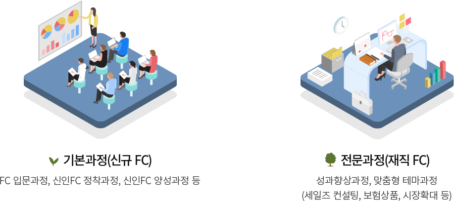

우체국FC 지원 및 채용절차
지원 및 채용절차
-
1오리엔테이션
- 우체국보험 소개
- 우체국FC가치
- 성공비전
- 교육프로그램
-
2면접
직업 작성 및 후보자
자질 객관적 평가 -
3평가
사이버교육(자율학습)
FC활동자격 부여평가 -
4입문교육
- 생명보험 기초지식
- 상품 및 R/P
-
5계약체결
- 희망우체국과 계약체결
우체국FC 교육과정

- 기본과정(신규 FC)
- FC 입문과정, 신인FC 정착과정, 신인FC 양성과정 등
- 전문과정(재직 FC)
- 성과향상과정, 맞춤형 테마과정 (세일즈 컨설팅, 보험상품, 시장확대 등)
우체국FC 지원시스템
신인 활동과 정착을 위한
적극적인 지원
- 신규정착수수료
- 신규교육수수료
- 정착축하수수료
- 생산성수수료
우체국FC 복지를 위한
실직적인 지원
- 자녀교육수수료
- 자격증취득수수료 (CFP, AFPK, IFP)
활동 성과와 노력 등에 대한
특별한 지원
- 유치수당
- 강사수수료
- 위 혜택들은 각각의 해당 요건이 충족될 경우 지급됩니다.